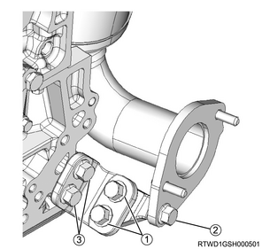
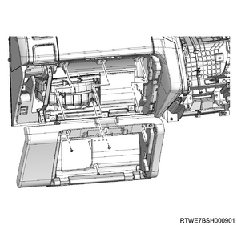
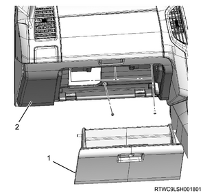
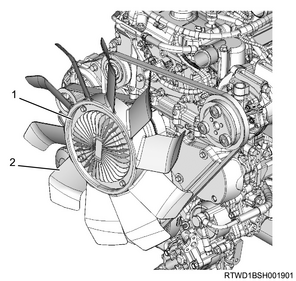
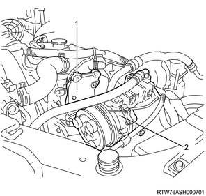
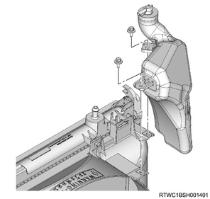
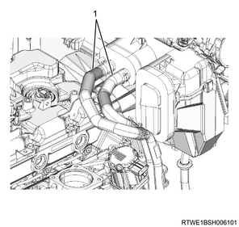
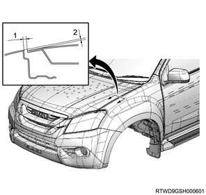
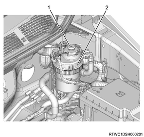

Engine assembly installation (4JJ1)
1. Engine assembly installation
1. Install the engine to vehicle using the hoist.
Note
- Slowly operate to move the engine to the installation position.
- Slowly operate the hoist so that the transmission side is low, while pulling to the rear of the engine.
2. Engine mounting connect
1. Connect the engine mounting to the frame.
Caution
- Tighten the bolts with the engine securely seated in the frame.
- Tightening the bolts with the engine mounting detached from the frame will cause the bolts to become loose.
Tightening torque： 60 N・m { 6.1 kgf・m / 44 lb・ft }
2. Remove the wire from the engine hanger and the hoist.
3. Remove the rear engine hanger from the cylinder head.
4. Remove the front engine hanger from the cylinder head.
3. Transmission installation
4. Starter motor installation
1. Install the starter motor to the rear plate.
Tightening torque： 94 N・m { 9.6 kgf・m / 69 lb・ft }
2. Connect the earth cable to the starter motor.
5. Oil level gauge guide tube installation
1. Apply the engine oil to the O-ring.
2. Install the oil level gauge guide tube to the crankcase.
Tightening torque： 25 N・m { 2.5 kgf・m / 18 lb・ft }
6. Transmission oil level gauge tube installation
1. Install transmission oil level gauge tube to the oil pan.
7. Radiator lower hose connect
1. Connect the radiator lower hose to the water intake pipe.
Tightening torque： 5 N・m { 0.5 kgf・m / 44 lb・in }

- Radiator lower hose
8. Power steering oil pump assembly installation
1. Install the power steering oil pump to the timing gear case.
Tightening torque： 25 N・m { 2.5 kgf・m / 18 lb・ft }

- Power steering oil pump
- Nut
2. Install the power steering oil hose to the bracket.

- Bracket
9. Catalyst converter installation
1. Install the catalyst converter to the turbocharger assembly.
Tightening torque： 27 N・m { 2.8 kgf・m / 20 lb・ft }

Caution
- Do not reuse the gasket.
2. Temporarily tighten the catalyst converter to the crankcase.
Note
- Temporarily tighten in the order shown in the diagram.

3. Securely tighten the catalyst converter to the crankcase.
Note
- Firmly tighten in the order shown in the diagram.
Tightening torque： 94 N・m { 9.6 kgf・m / 69 lb・ft }
4. Connect the catalyst converter to the front exhaust pipe.
Tightening torque： 67 N・m { 6.8 kgf・m / 49 lb・ft }

Caution
- Do not reuse the gasket.
10. Fuel hose connect
1. Connect the fuel hose to the fuel supply pump.

- Fuel hose
2. Connect the fuel hose to the leak-off pipe.
11. Vacuum hose connect
1. Install the harness bracket to the inlet manifold and the common rail (fuel rail) bracket.
2. Connect the vacuum hose to the vacuum pipe.
12. ECM connect
1. Connect the harness to the frame.
Note
- Pull in the harness toward inside the room.
2. Connect the harness connector to the ECM.
13. Instrument panel assist-side lower cover installation
1. Install the instrument panel assist-side lower cover to the instrument panel.
Note
- Install the 4 screws.

14. Glove box installation
1. Install the glove box to the instrument panel.

- Glove box
- Instrument panel assist side lower cover
15. Fan shroud installation
1. Install the fan guide to the radiator.
Note
- Install the lower fan guide together with the fan shroud.
16. Cooling fan installation
1. Install the cooling fan to the fan clutch assembly.
Tightening torque： 8 N・m { 0.8 kgf・m / 71 lb・in }

- Fan clutch assembly
- Cooling fan
17. Cooling fan belt installation
1. Install the cooling fan belt to the pulley.
18. Fan guide installation
1. Install the fan guide to the radiator.
Note
- Install the upper fan guide.

- Upper fan guide
- Clip
- Lower fan guide
- Fan shroud
19. A/C compressor assembly connect
1. Install the A/C compressor assembly to the A/C compressor bracket.
Tightening torque： 51 N・m { 5.2 kgf・m / 38 lb・ft }

- A/C compressor bracket
- A/C compressor
20. A/C compressor drive belt installation
1. Install the A/C compressor drive belt to the pulley.

- A/C compressor drive belt
21. Radiator reserve tank installation
1. Install the radiator reserve tank to the upper fan guide.
Tightening torque： 8 N・m { 0.8 kgf・m / 71 lb・in }

2. Connect the radiator reserve tank hose to the radiator.
Note
- When the radiator reserve tank is dirty, clean it before installation.
- Clean the radiator reserve tank using detergent.
- Scrub inside with detergent and water.
- Wash with clean water, and drain the water.
22. Radiator upper hose installation
1. Install the radiator upper hose to the water outlet pipe and the radiator.
Tightening torque： 5 N・m { 0.5 kgf・m / 44 lb・in }

- Radiator upper hose
23. Fuse box connect
1. Connect the battery harness to the fuse box.
2. Connect the engine harness to the fuse box.
3. Install the fuse box cover to the fuse box.
24. Battery installation
1. Install the battery to vehicle.

- Battery cable
- Battery bracket
- Earth
2. Install the battery bracket to the frame.
Tightening torque： 4 N・m { 0.4 kgf・m / 35 lb・in } Battery side
Tightening torque： 20 N・m { 2.0 kgf・m / 15 lb・ft } Frame side
3. Connect the battery cable to the battery.
4. Connect the battery ground cable to the frame.
25. Heater hose connect
1. Connect the heater hose to the heater pipe.
Note
- Connect the 2 heater hoses together.

- Heater hose
26. Intake air duct installation
1. Install the intake air duct to the intake throttle valve and the intercooler.
Note
- Align the marks on the pipe side and hose side.
Tightening torque： 10 N・m { 1.0 kgf・m / 89 lb・in } Bolt
Tightening torque： 4 N・m { 0.4 kgf・m / 35 lb・in } Clamp (Intake throttle side)
Tightening torque： 5 N・m { 0.5 kgf・m / 44 lb・in } Clamp (Intercooler side)

27. Boost pressure sensor connect
1. Connect the connector to the boost pressure sensor.

28. Air cleaner assembly installation
1. Install the air cleaner assembly to vehicle.
Tightening torque： 20 N・m { 2.0 kgf・m / 15 lb・ft }

- Air cleaner assembly
- MAF sensor
- Vacuum hose
- Blow-by hose
- Intake pipe
- Barometric pressure sensor
2. Connect the intake pipe to the turbocharger assembly.
Tightening torque： 4 N・m { 0.4 kgf・m / 35 lb・in }
Note
- Install by aligning the alignment mark position as shown in the diagram.

- Alignment mark
3. Connect the vacuum hose to the air cleaner assembly.
4. Connect the harness connector to the barometric pressure sensor.
5. Connect the harness connector to the MAF sensor.
29. Blow-by hose connect
1. Connect the blow-by hose to the cylinder head cover.
30. Intake air duct installation
1. Install the intake air duct to the turbocharger and the intercooler.
Caution
- Referring to the diagram, face the threaded portion of the clamp toward the engine front.
Tightening torque： 25 N・m { 2.5 kgf・m / 18 lb・ft } Nut, bolt
Tightening torque： 4 N・m { 0.4 kgf・m / 35 lb・in } Clamp (Turbocharger side)
Tightening torque： 5 N・m { 0.5 kgf・m / 44 lb・in } Clamp (Intercooler side)

31. Cowl panel installation
1. Install the cowl panel to vehicle.
Note
- Install with the 8 bolts.

32. Wiper linkage connect
1. Connect the wiper linkage to vehicle.

- Nut
- Bolt
Tightening torque： 5.3 N・m { 0.5 kgf・m / 46 lb・in }
Note
- Connect the connector to the wiper motor.
33. Cowl cover installation
1. Install the grommet to the cowl panel.
Note
- Install with the top mark facing upward.
- After installing the grommet to the cowl panel, verify that it is installed securely.
- If the grommet drops off when it is pushed back into the cowl panel, install it again.

- Top mark
2. Install the cowl cover to the cowl panel.
3. Connect the washer hose to the clip.

- Grommet
- Connection of washer hose
34. Side cowl cover installation
1. Install the side cowl cover to the body.

- Side cowl cover
35. Wiper arm installation
1. Install the wiper arm to vehicle.
Caution
- Confirm that the wiper motor is stopped at the auto stop position.
Tightening torque： 31.0 N・m { 3.2 kgf・m / 22.9 lb・ft }

- 29 mm (1.14 in)
- 36.5 - 51.5 mm (1.44 - 2.03 in)
- 18 mm (0.71 in)
36. Wiper arm cover installation
1. Install the wiper arm cover to the wiper arm.
37. Engine cover installation
1. Install the engine cover to the engine.

- Engine cover
38. Engine hood assembly installation
1. Temporarily tighten the hinge bolt to the engine hood assembly.
Note
- Align the hinge with the marking made during removal.
2. Inspect the clearance.
Note
- Check the engine hood assembly and the fender.
3. Adjust the clearance to the specified value.
Note
- Adjust the installation of the engine hood hinge to adjust the clearance.

- Clearance: 4.0 mm {0.16 in}
- Height, level difference: -1.5 mm {-0.06 in}
Note
- Turn the hood rest to adjust its height, and adjust the level difference against the engine hood.

- Hood rest
4. Apply the grease to the striker.
Note
- Apply a thin layer of grease to the striker.
5. Install the engine hood garnish to the engine hood.
Note
- Tighten the 6 nuts to the specified torque.
Tightening torque： 6 N・m { 0.6 kgf・m / 53 lb・in }
6. Securely tighten the hinge bolt to the engine hood assembly.
Tightening torque： 6.5 N・m { 0.66 kgf・m / 58 lb・in }
7. Connect the tube to the washer nozzle.
39. Underguard installation
Note
- The following applies to models with an under air deflector.
1. Install the under air deflector to the frame.
Note
- Tighten the clip and the 5 bolts.
Tightening torque： 42 N・m { 4.3 kgf・m / 31 lb・ft }

- Bolt
- Clip
Note
- The following applies to models with front and rear underguard.
2. Install the rear underguard to the frame.
Note
- Tighten the 4 bolts.
Tightening torque： 42 N・m { 4.3 kgf・m / 31 lb・ft }
3. Install the front underguard to the frame.
Note
- Tighten the 5 bolts.
Tightening torque： 42 N・m { 4.3 kgf・m / 31 lb・ft }

- Front underguard
- Rear underguard
- Bolt
Note
- The following applies to models with front and rear underguard and an oil pan guard.
4. Install the rear underguard to the frame.
Note
- Tighten the 4 bolts.
Tightening torque： 42 N・m { 4.3 kgf・m / 31 lb・ft }
5. Install the oil pan guard to the frame.
Note
- Tighten the 4 bolts.
Tightening torque： 90 N・m { 9.2 kgf・m / 66.4 lb・ft }
6. Install the front underguard to the frame.
Note
- Tighten the 5 bolts.
Tightening torque： 42 N・m { 4.3 kgf・m / 31 lb・ft }

- Front underguard
- Oil pan guard
- Bolt oil pan guard
- Bolt
- Rear underguard
40. A/C compressor drive belt adjustment
1. Adjust tension to the specified value using a tension meter.
Note
- When adjusting the amount of flex to the original value
- Apply a load to measurement points 2, 3, and 4 of the A/C compressor drive belt and adjust the amount of flex.
Load： 98 N { 10 kg / 22 lb }
| Measurement point 2 | |
| Amount of flex | |
| For a new product | ： 12.4 to 16.4 mm { 0.488 to 0.646 in } |
| When reused | ： 16.5 to 19.1 mm { 0.650 to 0.752 in } |
| Measurement point 3 | |
| Amount of flex | |
| For a new product | ： 12.5 to 16.5 mm { 0.492 to 0.650 in } |
| When reused | ： 16.5 to 19.1 mm { 0.650 to 0.752 in } |
| Measurement point 4 | |
| Amount of flex | |
| For a new product | ： 15.9 to 20.7 mm { 0.626 to 0.815 in } |
| When reused | ： 20.7 to 23.7 mm { 0.815 to 0.933 in } |
Note
- When adjusting the tension by using a sonic tension meter
- Measure the frequency at measurement points 2, 3, and 4 with a sonic tension meter.
| Measurement point 2 | |
| Frequency | |
| For a new product | ： 92 to 112 Hz |
| When reused | ： 80 to 92 Hz |
| Measurement point 3 | |
| Frequency | |
| For a new product | ： 92 to 112 Hz |
| When reused | ： 79 to 91 Hz |
| Measurement point 4 | |
| Frequency | |
| For a new product | ： 70 to 86 Hz |
| When reused | ： 62 to 70 Hz |

- Measurement point 1
- Measurement point 2
- Measurement point 3
- Measurement point 4
- Adjust bolt (A/C compressor drive belt)
Note
- After adjusting the tension, tighten the tensioner fixing nut.
Tightening torque： 41 N・m { 4.2 kgf・m / 30 lb・ft }
41. Cooling fan belt adjustment
1. Adjust tension to the specified value using a tension meter.
Note
- Turn the adjust bolt to adjust the tension.
2. Check tension of the cooling fan belt.
Note
- When adjusting the amount of flex to the original value
- Apply a load to measurement point 1 of the cooling fan belt and adjust the amount of flex.
Load： 98 N { 10 kg / 22 lb }
| Position of belt tension | |
| Amount of flex | |
| New product | ： 5.0 to 6.0 mm { 0.197 to 0.236 in } |
| Reuse | ： 7.0 to 7.8 mm { 0.276 to 0.307 in } |
Note
- When adjusting the tension by using a sonic tension meter
- Measure the frequency at measurement point 1 with a sonic tension meter.
| Position of the belt tension | |
| Frequency | |
| New | ： 207 to 231 Hz |
| Reuse | ： 176 to 190 Hz |
- Measurement point 1
- Measurement point 2
- Measurement point 3
- Measurement point 4
- Adjust bolt (A/C compressor drive belt)
Note
- After adjusting the tension, tighten the tensioner fixing nut.
Tightening torque： 41 N・m { 4.2 kgf・m / 30 lb・ft }
Note
- If the cooling fan belt is replaced with a new one, make the new cooling fan belt fit in to cope with initial elongation.
- After making the cooling fan belt fit in, adjust its tension once again.
42. Coolant filling
1. Replenish the radiator with coolant.
Note
- Use the coolant contains 50 % anti-freeze solution.
- Pour coolant up to the filler neck.
2. Replenish the radiator reserve tank with coolant.
Note
- Pour coolant up to the MAX line.
3. Install the radiator cap to the radiator.
43. Fuel air bleed
1. Press the priming pump.
Note
- Press the priming pump until it gets stiff.

- Priming pump
- Fuel filter with the sedimenter
Caution
- Insufficient air removal work may lead to malfunction of the engine.
44. Battery ground cable connect
1. Connect the battery ground cable to the battery.
2. Close the engine hood assembly.
3. Lower vehicle.
45. ECM setting
Note
- When replacing the engine assembly, writing the injector ID codes into the ECM is required.
1. Check the Injector ID Code of the cylinder head cover.
Note
- Record the injector ID codes from the cylinder head cover labels.
- Cylinder No. 1 injector ID code
- Cylinder No. 2 injector ID code
- Cylinder No. 3 injector ID code
- Cylinder No. 4 injector ID code
- Injector ID code label
2. Connect a scan tool to the DLC.
3. Turn ON the ignition switch.
4. Select the Diagnostics.
5. Select the Engine.
6. Select the engine model.
7. Select the Programming.
8. Select the Injector ID Code.
9. Select the Injector Flow.
Note
- Follow the directions on the screen and write the injector ID codes into the ECM.
10. Turn OFF the ignition switch.
Note
- After the programming is complete, turn the ignition switch to OFF for 30 seconds.
46. ECM writing
Note
- When replacing the engine assembly, unit difference learning for the supply pump is required.
1. Connect a scan tool to the DLC.
2. Start the engine.
Note
- Start the engine and warm it up.
3. Check the Data List of a scan tool.
Note
- Confirm that the coolant temperature display is at the standard value or higher.
Standard： 65 ℃ { 149 °F }
4. Check the Data List of a scan tool.
Note
- Confirm that the Fuel Supply Pump Learning Status display changes from Not Learned to Learned.
5. Check the DTC of a scan tool.
Note
- Observe the DTC information with a scan tool. Any DTCs should not be set.